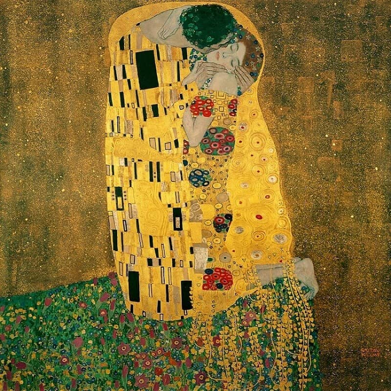

| Картина | Цитат | Превод |
|---|---|---|
 Една от най-известните картини на Густав Климт, която се помещава в двореца-музей Belvedere във Виена. Тя е покрита с чисто злато с внушителните размери 2 х 2 метра. Закупена е още преди да бъде завършена за колосална сума, като картината не се продава, т.к. се счита за национално богатство на Австрия. Тя е една от най-разпознаваемите картини с най-много репродукции в света. Wikipedia |
"Kunst ist eine Grenze um deine Gedanken." – Gustav Klimt | "Изкуството е граница на твоето мислене." - Густав Климт |
| "Die Musik steckt nicht in den Noten, sondern in der Stille dazwischen." - Wolfgang Amadeus Mozart | "Музиката не се крие в нотите, а в тишината между тях." - Волфганг Амадеус Моцарт | |
| "Der Mensch ist ein Mikrokosmos oder eine kleine Welt, weil er ein Auszug aus allen Sternen und Planeten des ganzen Firmaments ist, aus der Erde und den Elementen; und so ist er ihre Quintessenz." - Paracelsus | „Човекът е микрокосмос, или малък свят, защото той е екстракт от всички звезди и планети и от цялата небесна твърд, от земята и елементите; и така той е тяхна квинтесенция.“ - Парацелз | |
| „Man muss noch Chaos in sich haben, um einen tanzenden Stern gebären zu können.“ - Friedrich Nietzsche | "Човек трябва да носи хаос в себе си, за да се роди танцуваща звезда." - Фридрих Ницше | |
| "Zwei Dinge erfüllen das Gemüt mit immer neuer und zunehmender Bewunderung und Ehrfurcht, je öfter und anhaltender sich das Nachdenken damit beschäftigt: Der bestirnte Himmel über mir und das moralische Gesetz in mir. Ich sehe sie beide vor mir und verknüpfe sie unmittelbar mit dem Bewusstsein meiner Existenz." - Immanuel Kant | „Две неща изпълват ума ми с все по-ново и нарастващо възхищение и страхопочитание, колкото по-често и по-упорито мисля за тях: звездното небе над мен и моралния закон вътре в мен. Виждам ги и двете пред себе си и ги свързвам със съзнанието на моето съществуване." - Имануел Кант |